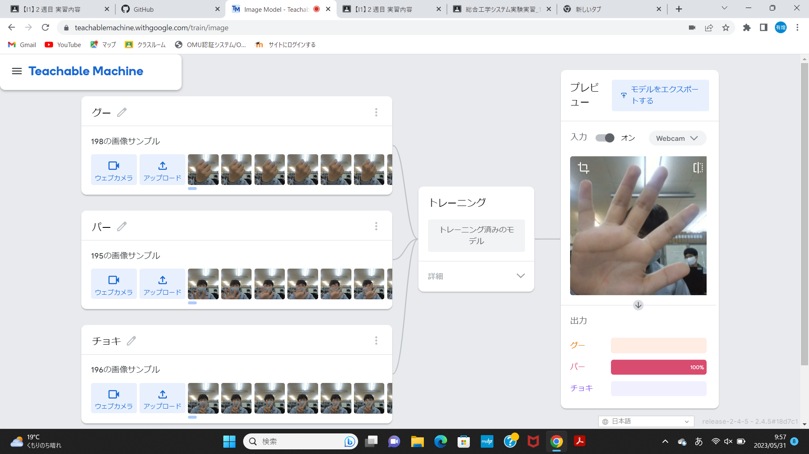
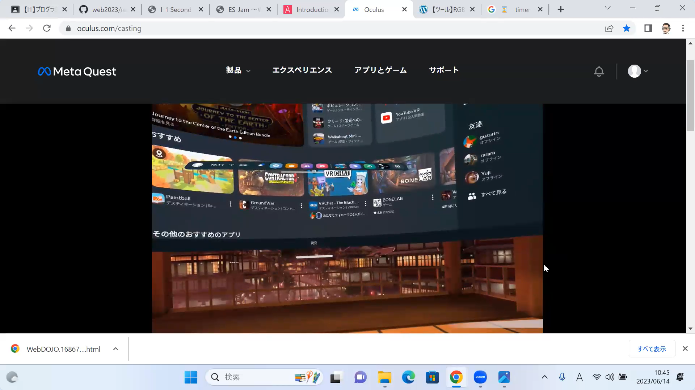

第2週目
2-1 １週目のレポートをHTMLで作る
１週目のレポート
1.内容
１週目のレポートをhtmlにして、まとめる。
2.感想
書き間違いのないように注意し、書く位置さえ間違えなければスムーズに事を運べることが分かった。
2-2 機械学習体験

1.内容
人工知能の定義や今までの進化の軌跡を知り、実際にteachable machineを使って、じゃんけんの手の形を覚えさせて、手の形を判別する疑似的なAIを体験した。
2.感想
複数枚の写真だけから、その状況を分析、記憶し、判別を行うことができてしまうことにとても感心し、どのような形で情報を分別しているのか気になった。
2-3 VR（バーチャルリアリティー：Virtual Reality）会議室の体験

1.内容
VR機器を用いて、VR空間に入り、考えを深める。
2.感想
VR内でも景色や距離感がはっきりとしていて、自分の手や足をどのように認識しているのか疑問に思った。